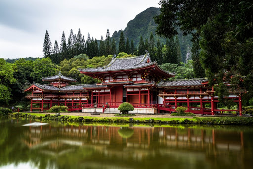
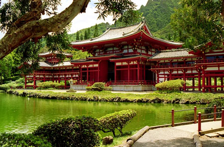
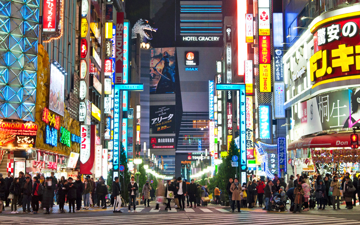
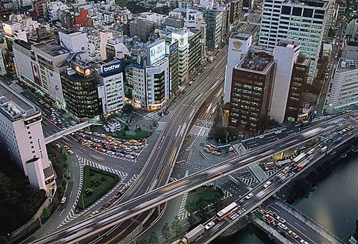
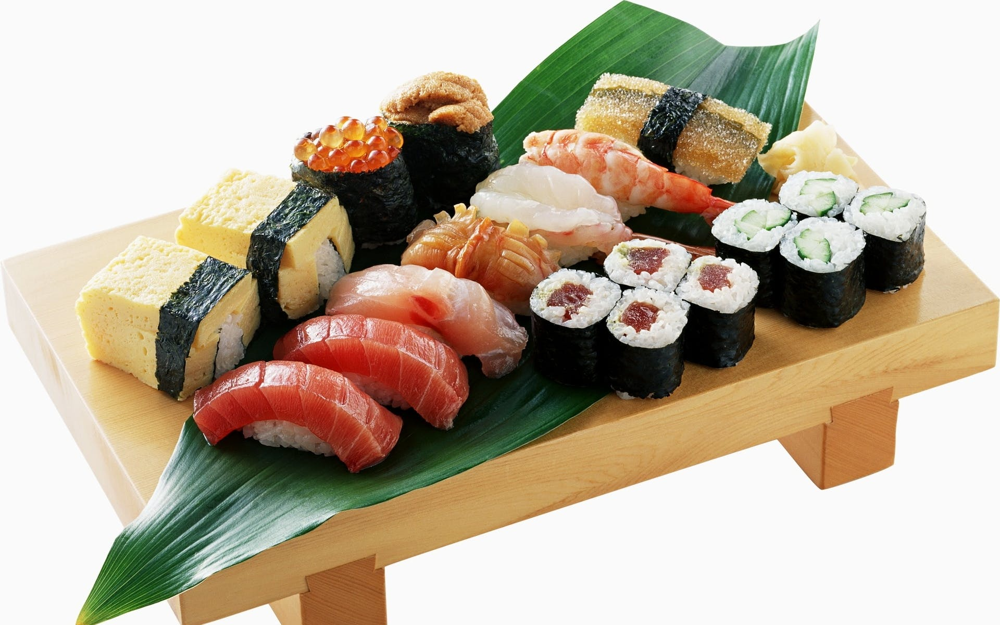
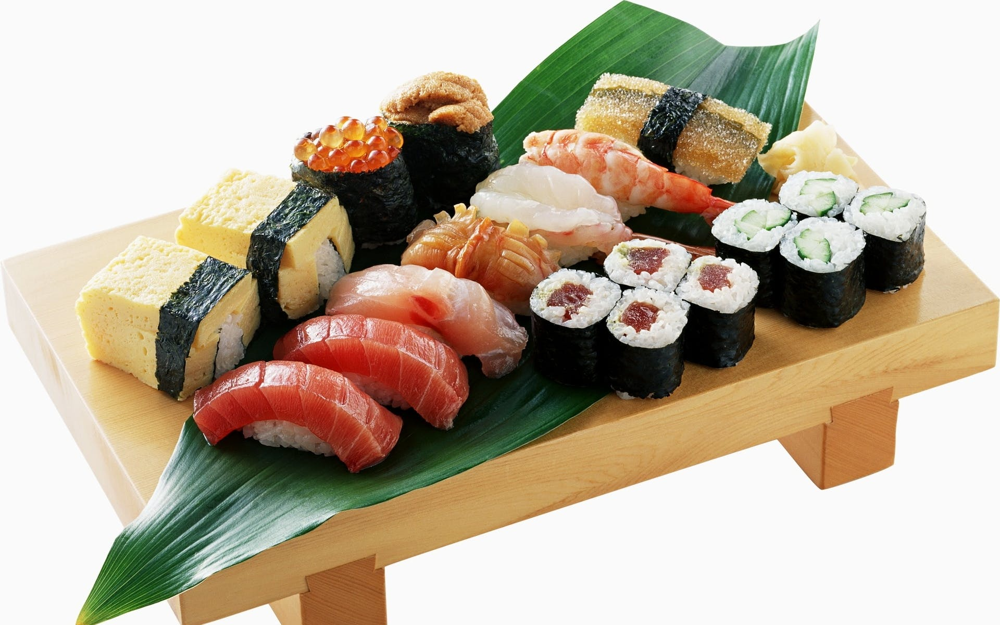
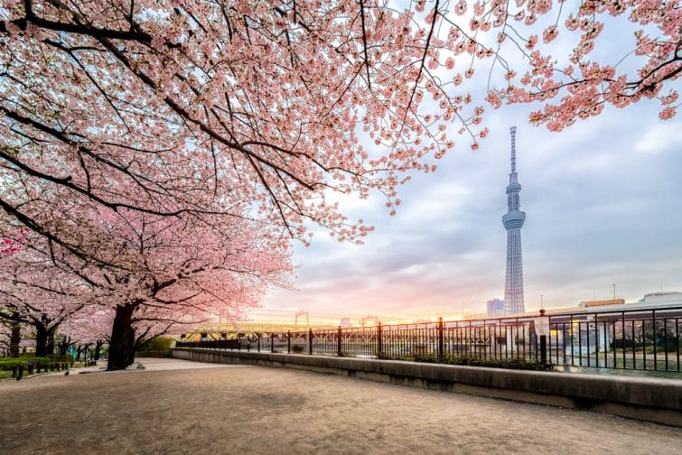
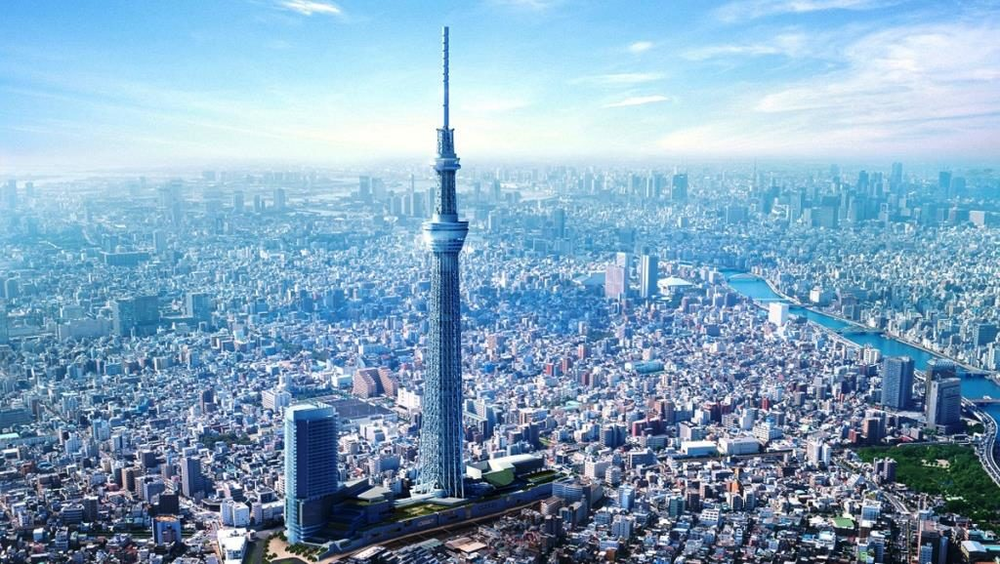

l'architecture
Il est bien difficile de ne pas tomber sous le charme de l'architecture japonaise. Elle a tantôt le visage de l’urbanisme exacerbé de Tokyo et de ses bâtiments ultramodernes, tantôt celui de la quiétude ancestrale des nombreux temples et jardins que l'on trouve à de Kyoto. Châteaux, temples bouddhistes et sanctuaires shinto sont autant de facettes de sa diversité.


Tokyo
Rien que pour Tokyo, immense capitale effervescente, il faut visiter le Japon. Elle a tellement de visages et est si riche sur le plan culturel que certains voyageurs peuvent y passer l'intégralité de leur séjour. Boutiques, restaurants, musées, parcs, temples situés entre deux buildings, sources thermales, salles de karaoké privées, le quartier d'Ueno... La liste des activités à y faire est très longue!


la gastronomie
Évidemment, on visite un pays à travers ses monuments et ses sites incontournables, mais il ne faudrait pas pour autant en négliger la gastronomie! On voyage en effet aussi à travers les mets et quand il s'agit du Japon, on peut se gâter, car on a affaire à l'une des gastronomies les plus fines et les plus inventives au monde! Quoi de mieux comme cadre pour manger ses sushis nigiri, sashimi ou maki que le Japon!
 

La tour Skytree
Difficile de se rendre compte de la physionomie générale de Tokyo quand on la parcourt à pied ou en métro. Pour obtenir une vue globale de la capitale, il est possible de prendre un ticket pour accéder aux plateformes d’observation de la Skytree, la tour de radiodiffusion du Japon, l’infrastructure la plus haute du pays. Un peu moins haute, mais gratuite, la Mairie de Tokyo offre également des vues d’ensemble de la ville

